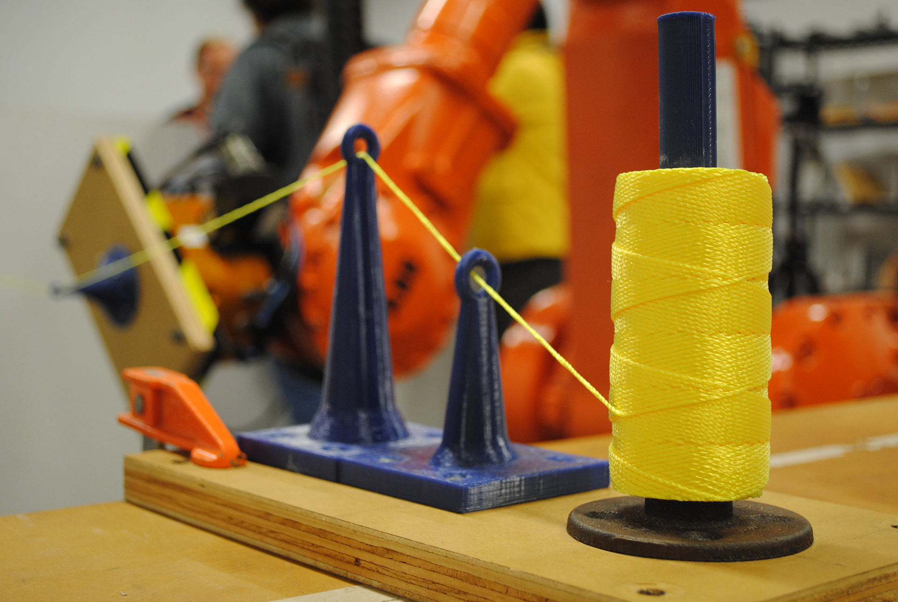
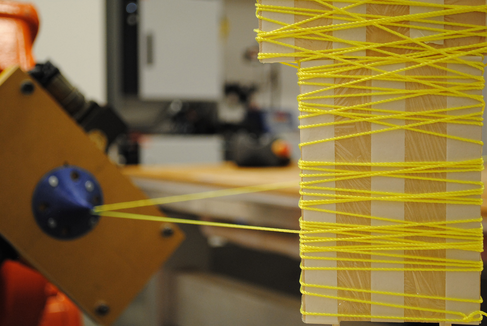
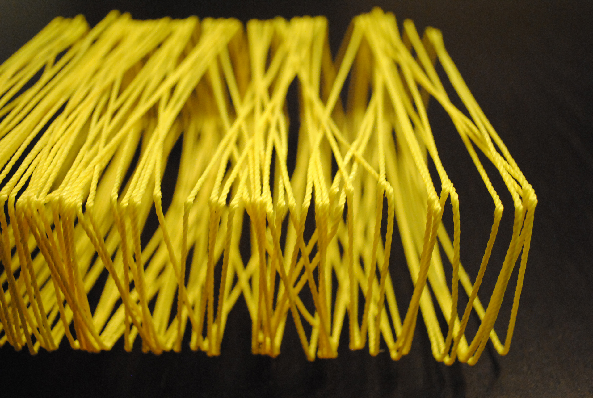
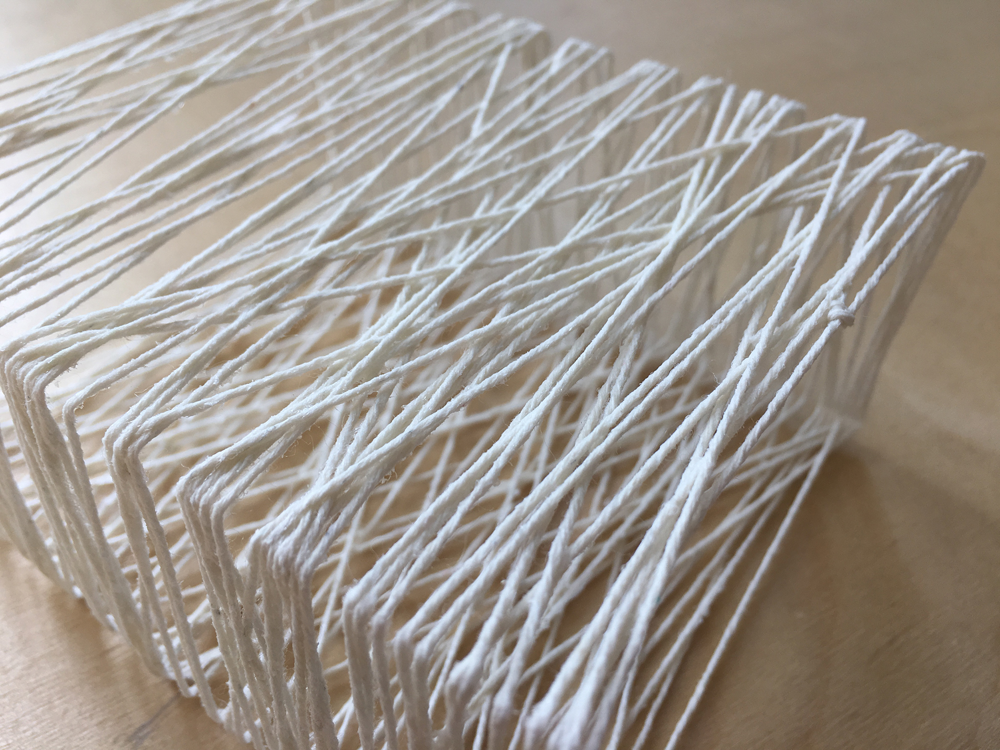
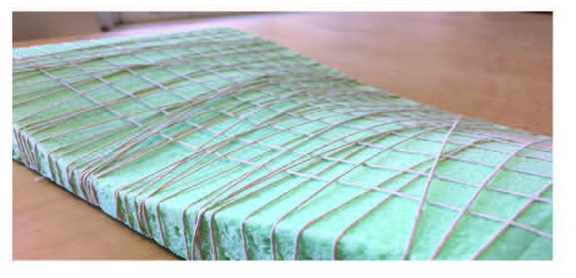
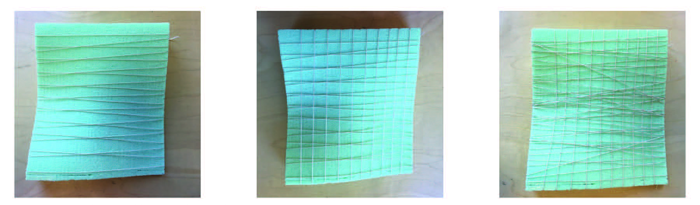

This research was conducted to improve Robotic Post-Processing of 3D Printed Concrete of Manufacturing Futures Initiative (MFI) for investigating the automatic concrete delivery and control system with digital and integrated robotics control system. The research is divided into two parts. One is designing concrete delivery system and the other is designing End of Arm Tool (EOAT) with concrete delivery system..

Our project was originally inspired by fabric membrane structures and the capabilites of manipulating fabric into complex freeform surfaces. We were interested in exploring how a robotic arm could manipulate wires as a means of creating a formwork across which to stretch the fabric. However, as we delved further into physically testing this process, we became more interested in the wires themselves rather than the fabric membrane. After studying projects such as Atelier Robitiq’s lamp shades (shown to the left) and the ICD/ITKE carbon fiber pavilions (shown below), we allowed our rigid wires to become fexible thread. In doing so, our project became a much more intricate process of allowing a robotic arm to work in tandem with a rotary table to weave a form that, when complete, could allow the thread to be a form in of itself rather than acting as a framework for an additional membrane.

In all of the projects we researched as case studies, the shape of the formworks used were almost always convex. By introducing concave surfaces into our forms, we had to explore ways in which the thread would conform to both positive and negative curvature. In the series of photos above, we tested how multiple woven layers with different orientations allowed the thread to achieve a very close approximation of the original freeform surface. The results proved that differing directionality and density of the woven pattern would drastically effect the final form. By using a robotic arm to control the thread, these two factors can be controlled in such a way to allow for woven forms with varying degrees of curvature and structural integrity.

In order to create proper tension in the thread, two toolplates were needed: a spooling system that could be anchored to a nearby work surface, and an end effector that would accurately guide the thread around the formwork. Additionally, the use of the rotary table required the development of an attachment plate that could both be locked onto the table and provide for a connection to hold the formwork in place.


